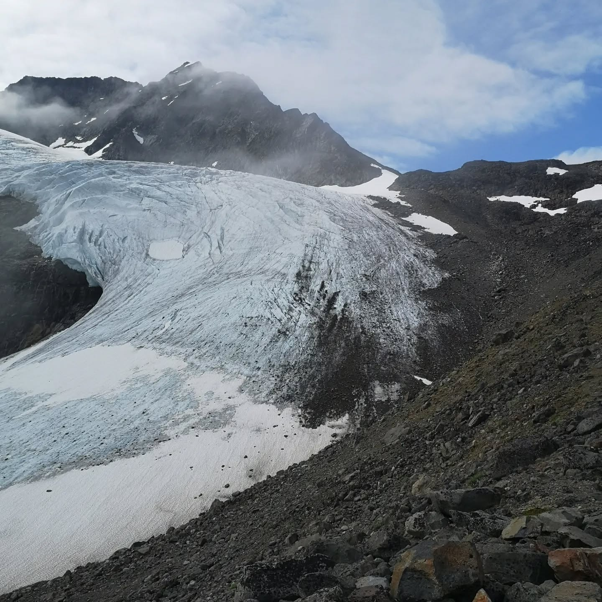
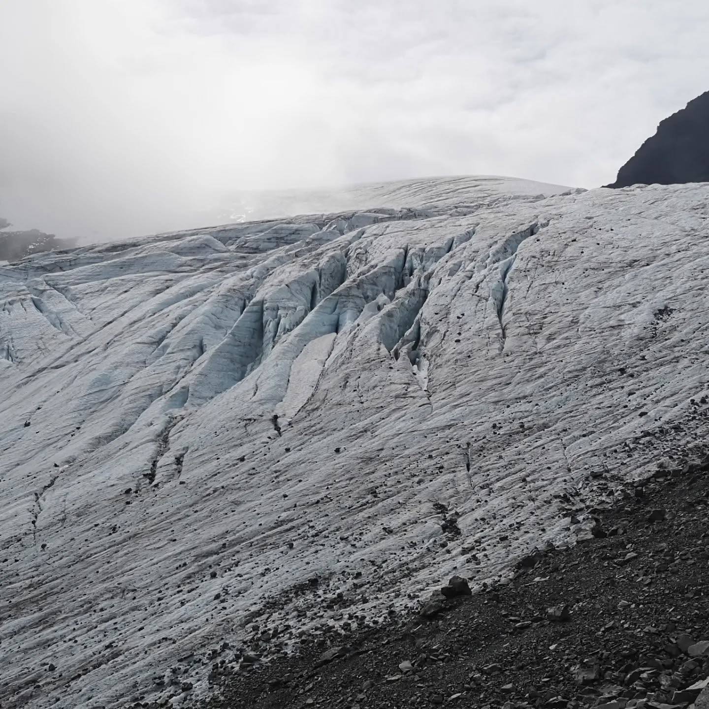
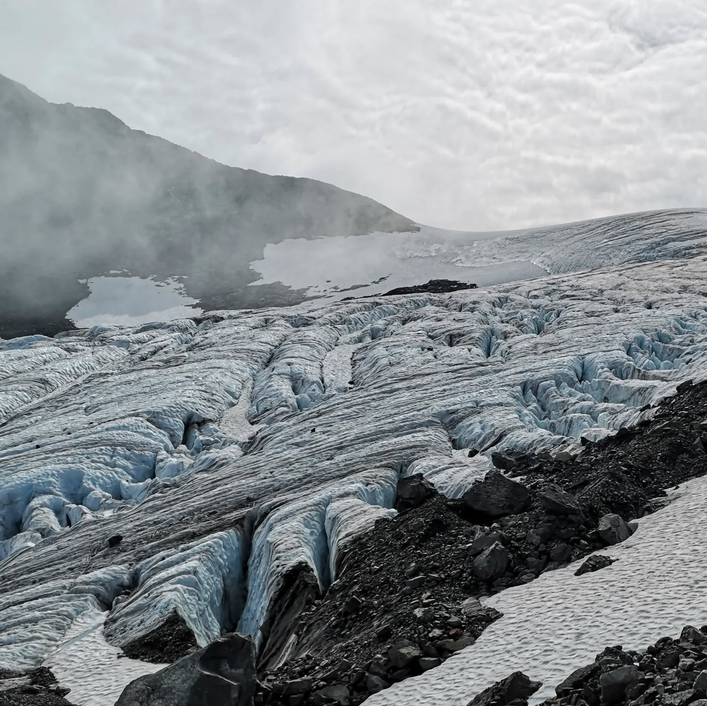
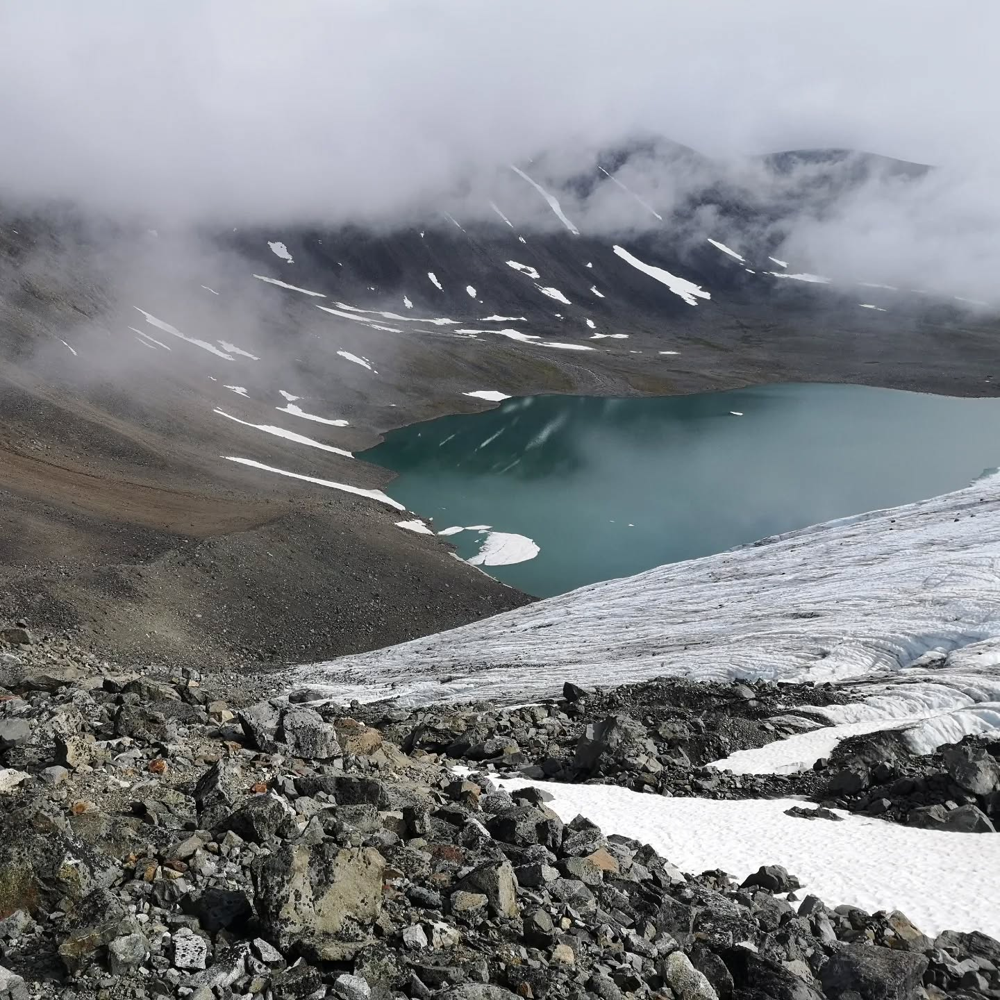
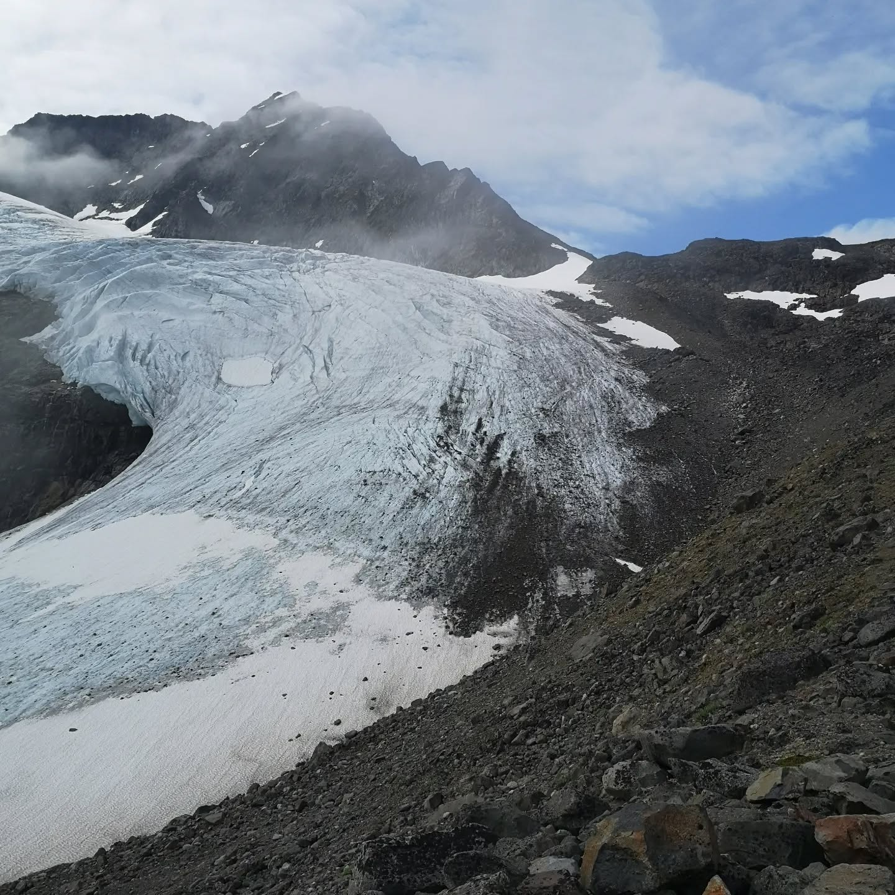
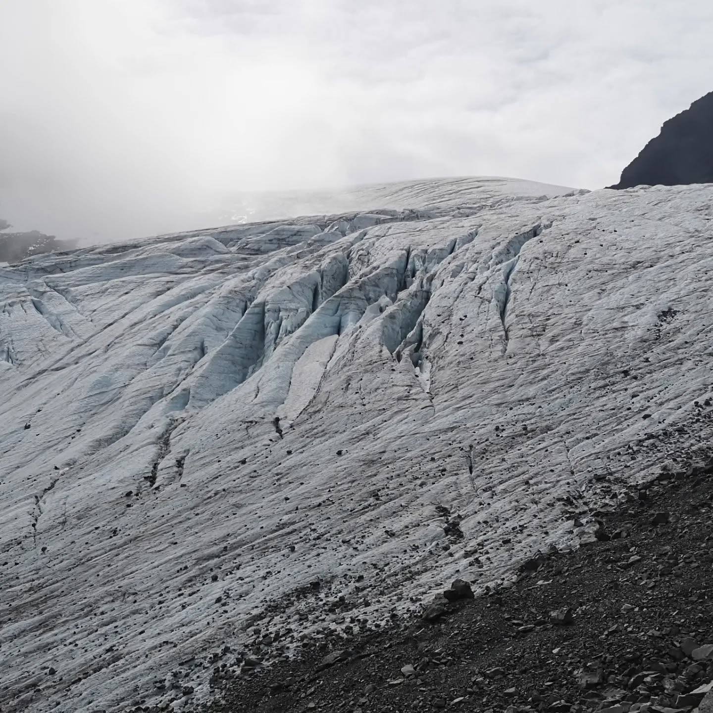
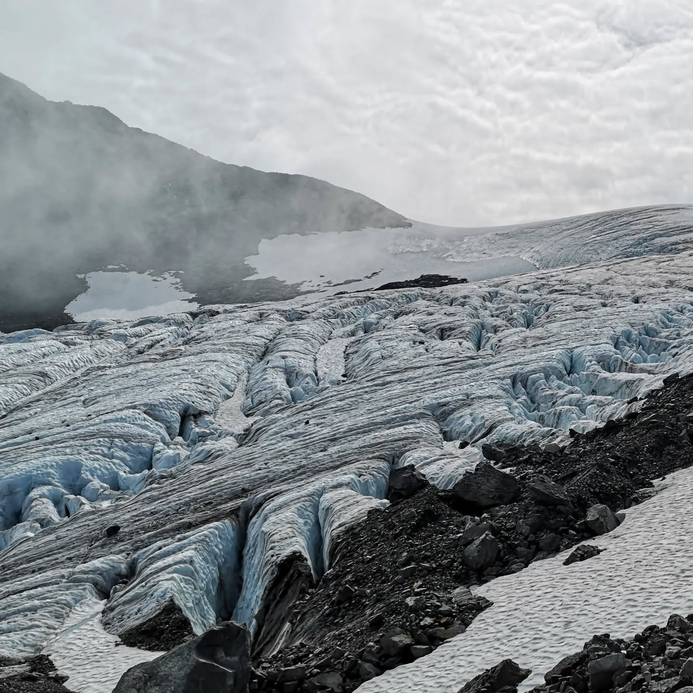
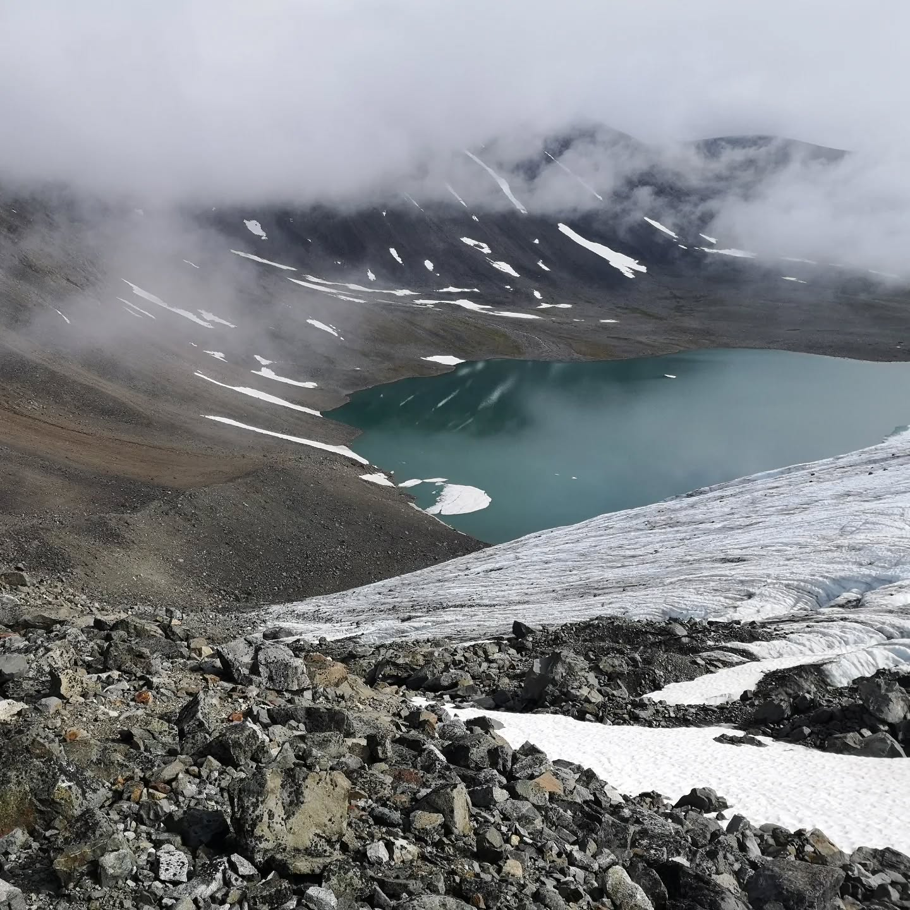
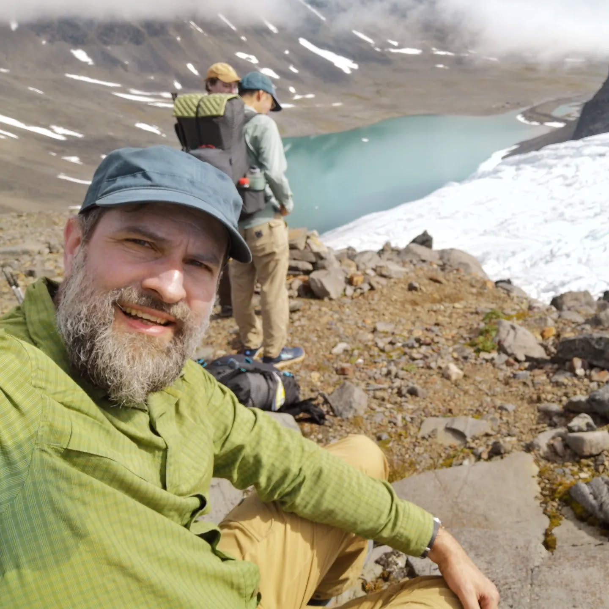
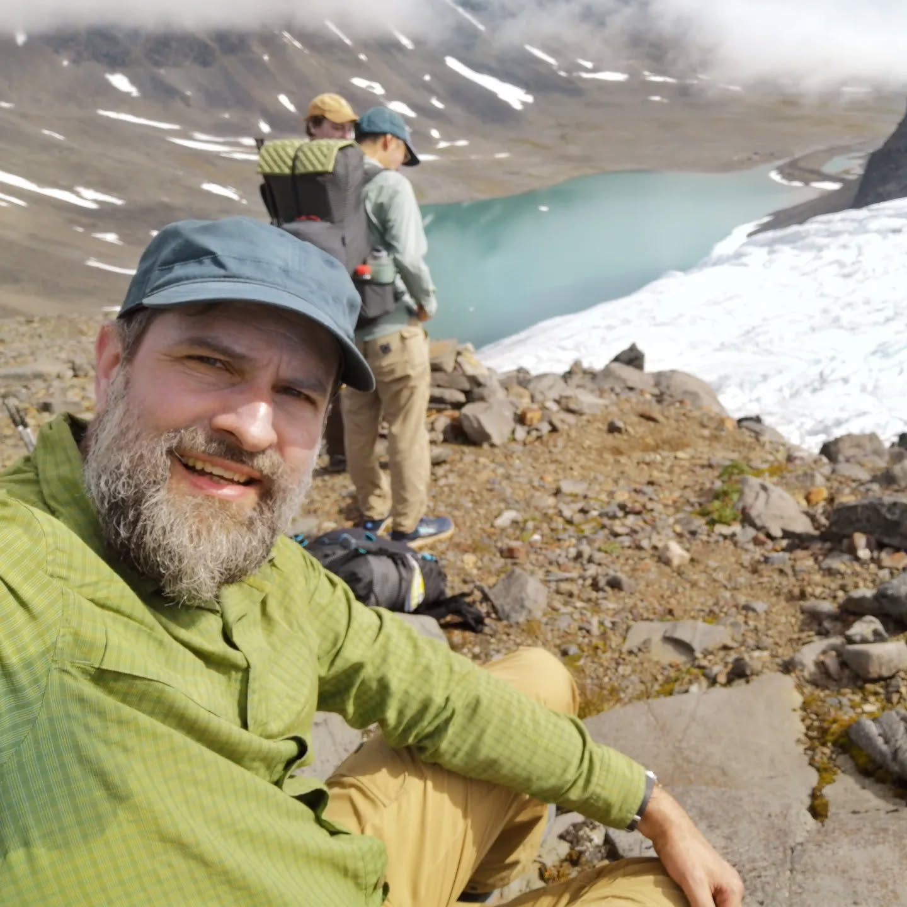

Day 3 of 6. Part one. From Tarfala up another unmarked path...
Imported from Instagram.
Day 3 of 6. Part one. From Tarfala up another unmarked path over the side moraine of a glacier over lose rocks. The crux to reach the pass was either walking over the side of the Glacier or scrambling around an exposed ledge. We are not equipped or trained for glaciers, so we scramble. This pass can only be crossed with good weather conditions and we got lucky. The views just kept getting better.

 








 
